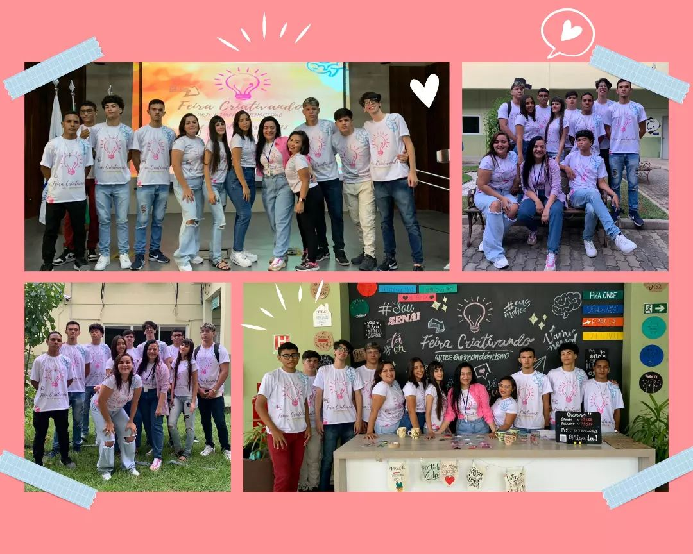

Olá eu sou, Victor Matheus 🖐️
Desenvolvedor Front-End
Sobre Mim
-
Começo da Jornada
Em 2021, iniciei minha trajetória como Jovem Aprendiz no Senai, onde participei de projetos, incluindo o "Criativando", e aprendi trabalho em equipe e tecnologias ágeis como Trello e Notion.
 2021 -
Começo da Jornada
Minha trajetória profissional teve início em 2020, quando ingressei como Jovem Aprendiz no Senai. Durante minha experiência, participei de diversos projetos e eventos, destacando-se o "Criativando". Essa oportunidade me proporcionou a aquisição de conhecimentos em trabalho em equipe, bem como o domínio de tecnologias ágeis, tais como Trello e Notion.
2020 -
Começo da Jornada
Minha trajetória profissional teve início em 2020, quando ingressei como Jovem Aprendiz no Senai. Durante minha experiência, participei de diversos projetos e eventos, destacando-se o "Criativando". Essa oportunidade me proporcionou a aquisição de conhecimentos em trabalho em equipe, bem como o domínio de tecnologias ágeis, tais como Trello e Notion.
2020 -
Começo da Jornada
Minha trajetória profissional teve início em 2020, quando ingressei como Jovem Aprendiz no Senai. Durante minha experiência, participei de diversos projetos e eventos, destacando-se o "Criativando". Essa oportunidade me proporcionou a aquisição de conhecimentos em trabalho em equipe, bem como o domínio de tecnologias ágeis, tais como Trello e Notion.
2020